第8章：实践中：项目“拼贴”¶
在过去的几章中，您学到了很多关于在Swift Playground的“安全”中使用发布者、订阅者和各种不同的操作符的知识。但是现在，是时候让这些新技能发挥作用，并使用真正的iOS应用程序来动手了。
为了总结本节，您将致力于一个包含现实生活场景的项目，您可以在其中应用新获得的组合知识。
这个项目将带您完成：
- 将联合发布者与
Photos等系统框架一起使用。 - 使用
Combine处理用户事件。 - 使用各种操作符创建不同的订阅来驱动应用程序的逻辑。
- 包装现有的
Cocoa API，以便您可以在组合代码中方便地使用它们。
该项目被称为Collage Neue，它是一个iOS应用程序，允许用户从照片中创建简单的拼贴，如下所示：
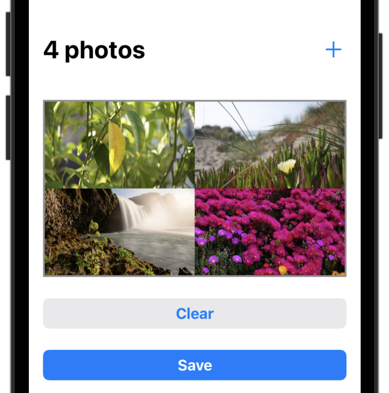
在您继续学习更多操作符之前，这个项目将为您提供一些使用Combine的实践经验，并且是理论密集型章节的良好突破。
您将完成一些松散连接的任务，您将根据本书迄今为止所涵盖的材料使用技术。
此外，您将使用稍后将推出的一些操作符来帮助您为应用程序的一些高级功能提供动力。
不用再多说——是时候编码了！
开始使用"Collage Neue"¶
要开始使用Collage Neue，请打开本章材料提供的入门项目。该应用程序的结构相当简单——有一个创建和预览拼贴的主视图和一个额外的视图，用户可以选择要添加到正在进行的拼贴中的照片：
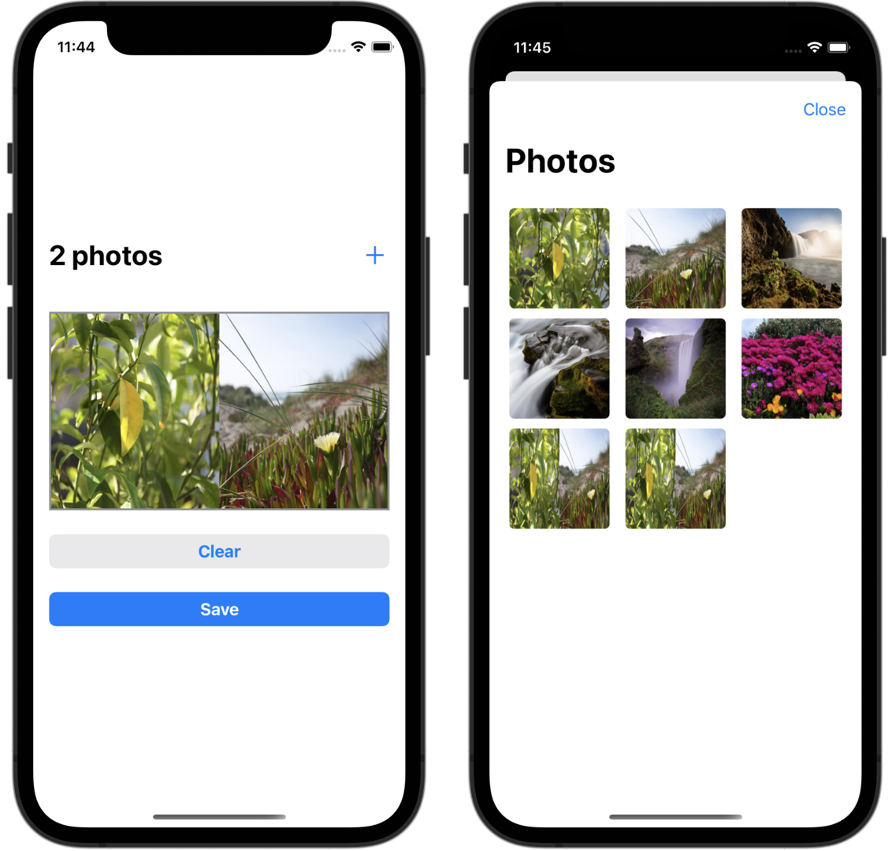
Note
在本章中，您将专门锻炼与Combine合作。您将尝试各种绑定数据的方式，但不会专注于专门使用Combine和SwiftUI；您将在第15章《实践：Combin & SwiftUI》中研究如何使用这两个框架。
目前，该项目没有实现任何逻辑。但是，它确实包含一些您可以利用的代码，因此您只能专注于组合相关代码。让我们从充实将照片添加到当前拼贴中的用户交互开始。
打开CollageNeueModel.swift，并导入文件顶部的Combine框架：
import Combine
这将允许您在模型文件中使用组合类型。要开始，请在CollageNeueModel类中添加两个新的私有属性：
private var subscriptions = Set<AnyCancellable>()
private let images = CurrentValueSubject<[UIImage], Never>([])
subscriptions是您将存储与主视图生命周期或模型本身相关的任何订阅的集合。如果模型发布，或者您手动重置subscriptions，所有正在进行的订阅都将被方便地取消。
Note
如第1章“你好，Combine！”所述，订阅者返回Cancellable的令牌，以控制订阅的生命周期。AnyCancellable是一种类型擦除类型，允许将不同类型的可取消内容存储在同一集合中，就像在上面的代码中一样。
您将使用images为当前拼贴显示用户当前选择的照片。当您将数据绑定到UI控件时，最适合使用CurrentValueSubject而不是PassthroughSubject。前者总是保证在订阅时至少会发送一个值，并且您的用户界面永远不会有未定义的状态。
一般来说，CurrentValueSubject非常适合表示状态，例如照片数组或加载状态，而PassthroughSubject更适合表示事件，例如用户点击按钮，或只是指示发生了什么事情。
接下来，要将一些图像添加到拼贴中并测试您的代码，请将以下行附加到add()中：
images.value.append(UIImage(named: "IMG_1907")!)
每当用户点击绑定到CollageNeueModel.add()的右上角导航项中的+按钮时，您将向当前images数组添加IMG_1907.jpg，并通过subject发送该值。
您可以在该项目的资产目录中找到IMG_1907.jpg——这是我几年前在巴塞罗那附近拍的一张好照片。
方便的是，CurrentValueSubject允许您直接突变其value，而不是使用send(_:)发射新值。两者是相同的，因此您可以使用感觉更好的语法-您可以在下一段中尝试send(_:)
要还能够清除当前选择的照片，请移到同一文件中的clear()，然后添加在那里：
images.send([])
此行发送一个空数组作为images的最新值。
最后，您需要将受制images绑定到屏幕上的视图。有不同的方法可以做到这一点，但是，为了在本实践章节中涵盖更多内容，您将为此使用@Published属性。
像这样向您的模型添加一个新属性：
@Published var imagePreview: UIImage?
@Published是将“香草”属性包装成发布者的属性包装器吗？这有多酷？由于您的模型遵循ObservableObject，因此将imagePreview绑定到屏幕上的视图变得超级简单。
滚动到bindMainView()，并添加此代码以绑定屏幕上图像预览的images。
// 1
images
// 2
.map { photos in
UIImage.collage(images: photos, size: Self.collageSize)
}
// 3
.assign(to: &$imagePreview)
此订阅的逐个分析如下：
- 您开始订阅当前照片集。
- 您可以使用
map通过调用UIImage.collage(images:size:)将它们转换为单个拼贴，这是UIImage+Collage.swift中定义的帮助方法。 - 您使用
assign(to:)订阅者将生成的拼贴图像绑定到imagePreview，这是中心屏幕图像视图。 使用assign(to:)订阅者自动管理订阅生命周期。
最后，但并非最不重要的是，您需要在视图中显示imagePreview。打开MainView.swift并找到行Image(uiImage: UIImage())将其替换为：
Image(uiImage: model.imagePreview ?? UIImage())
您使用最新的预览，或者如果不存在预览，则使用空的UIImage。
是时候测试那个新订阅了！构建并运行应用程序，并单击几次+按钮。您应该会看到一个拼贴预览，每次单击+时，都会显示同一照片的更多副本：
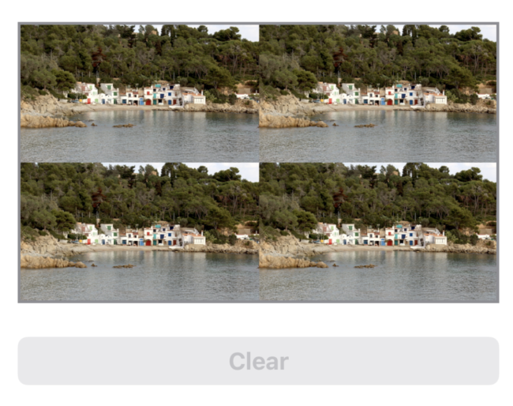
您可以获得照片收藏，将其转换为拼贴画，并在单个订阅中将其分配给图像视图！
然而，在典型的场景中，您不需要更新一个UI控件，而是更新几个。为每个绑定创建单独的订阅可能太过分了。因此，让我们看看如何作为单个批次执行一些更新。
MainView中已经包含一种名为updateUI(photosCount:)的方法，它进行各种UI更新：当当前选择包含奇数照片时，它将禁用保存按钮，每当拼贴正在进行时启用清除按钮等。
要在每次用户将照片添加到拼贴时调用 upateUI(photosCount:)，您将使用 handleEvents(...) 操作符。 如前所述，这是在您想要执行诸如日志记录或其他方面的副作用时使用的操作符。
通常，建议从sink(...)或assign(to:on:)更新UI，但是，为了尝试一下，在本节中，您将在handleEvents中这样做。
返回CollageNeueModel.swift并添加新属性：
let updateUISubject = PassthroughSubject<Int, Never>()
要练习使用subject在不同类型之间进行通信（例如，在这种情况下，您正在使用它，以便您的模型可以“回看”到您的视图），您添加了一个名为updateUISubject的新subject。
通过这个新subject，您将发出当前选择的照片数量，以便视图可以观察计数并相应地更新其状态。
在bindMainView()，在使用map的行之前插入此操作符：
.handleEvents(receiveOutput: { [weak self] photos in
self?.updateUISubject.send(photos.count)
})
Note
handleEvents 操作符使您能够在发布者发出事件时执行副作用。 您将在第10章“调试”中了解更多相关信息。
这将把当前选择输入到 updateUI(photosCount:)然后将它们转换为map操作符中的单个拼贴图像。
现在，要在MainView中观察updateUISubject，请打开MainView.swift和.onAppear(...)正下方的新修饰符：
.onReceive(model.updateUISubject, perform: updateUI)
此修饰符观察给定的发布者，并在视图的生命周期内调用updateUI(photosCount:)）。如果您好奇，请向下滚动到updateUI(photosCount:)然后进入代码。
构建并运行项目，您会注意到预览下方的两个按钮已被禁用，这是正确的初始状态：
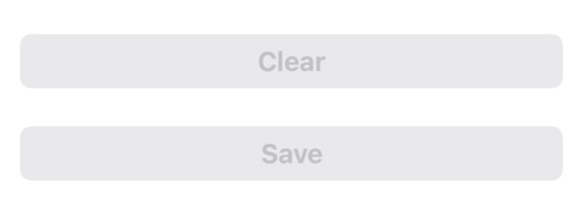
随着您将更多照片添加到当前拼贴中，按钮将不断更改状态。例如，当您选择一到三张照片时，保存按钮将被禁用，但将启用清除，如下所示：
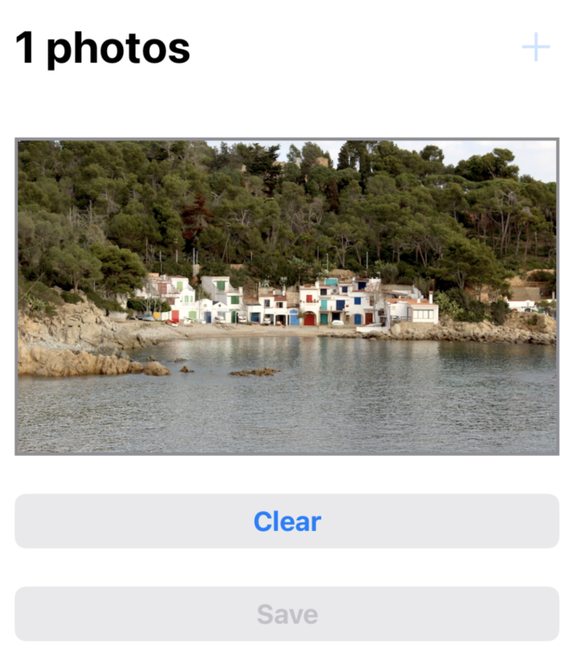
展示views¶
您看到通过主体路由用户界面的数据并将其绑定到屏幕上的某些控件是多么容易。接下来，您将处理另一个常见任务：呈现新视图，并在用户用完后获取一些数据。
绑定数据的一般想法保持不变。您只需要更多的发布者或subject来定义正确的数据流。
打开PhotosView，您将看到它已经包含从相机胶卷加载照片并将其显示在集合视图中的代码。
您的下一个任务是将必要的组合代码添加到您的模型中，以便用户选择一些相机胶卷照片并将其添加到他们的拼贴中。
在CollageNeueModel.swift中添加以下subject：
private(set) var selectedPhotosSubject =
PassthroughSubject<UIImage, Never>()
此代码允许CollageNeueModel在subject完成后用新subject替换subject，但其他类型只能访问发送或订阅以接收事件。
说到这个，让我们将集合视图委托方法连接到该subject。
向下滚动以 selectImage(asset:)已经提供的代码从设备库中获取给定的照片资产。照片准备就绪后，您应该使用subject将图像发送给任何订阅者。
将// Send the selected image注释替换为：
self.selectedPhotosSubject.send(image)
嗯，那很容易！但是，由于您将subject暴露在其他类型中，您希望显式发送完成事件，以防视图被关闭以拆除任何外部订阅。
同样，您可以通过几种不同的方式实现这一点，但对于本章，请打开PhotosView.swift并找到.onDisappear(...)修饰符。
添加内部.onDisappear(...)
model.selectedPhotosSubject.send(completion: .finished)
当您从显示的视图导航回来时，此代码将发送finished的事件。要结束当前任务，您仍然需要订阅所选照片，并将这些照片显示在主视图中。
打开CollageNeueModel.swift，找到add()，并将其主体替换为：
let newPhotos = selectedPhotosSubject
newPhotos
.map { [unowned self] newImage in
// 1
return self.images.value + [newImage]
}
// 2
.assign(to: \.value, on: images)
// 3
.store(in: &subscriptions)
在上面的代码中，您：
- 获取当前所选图像列表，并将任何新图像附加到其中。
- 使用
assign通过images主体发送更新的图像数组。 - 您将新订阅存储在
subscriptions中。但是，每当用户关闭显示的视图控制器时，订阅就会结束。
随着您的新绑定准备就绪，最后一步是抬起显示照片选择器视图的标志。
打开MainView.swift，找到您调用model.add()的+按钮操作闭包。在该闭包中再添加一行：
isDisplayingPhotoPicker = true
isDisplayingPhotoPicker状态属性已连接到在设置为true时显示PhotosView，因此您可以进行测试！
运行该应用程序并尝试新添加的代码。点击+按钮，您将在屏幕上看到系统照片访问对话框弹出窗口。由于这是您自己的应用程序，因此可以安全地点击允许访问所有照片，以允许从Collage Neue应用程序访问模拟器上的完整照片库：
这将重新加载收集视图，其中包含iOS模拟器附带的默认照片，或者如果您正在设备上进行测试，则重新加载您自己的照片：
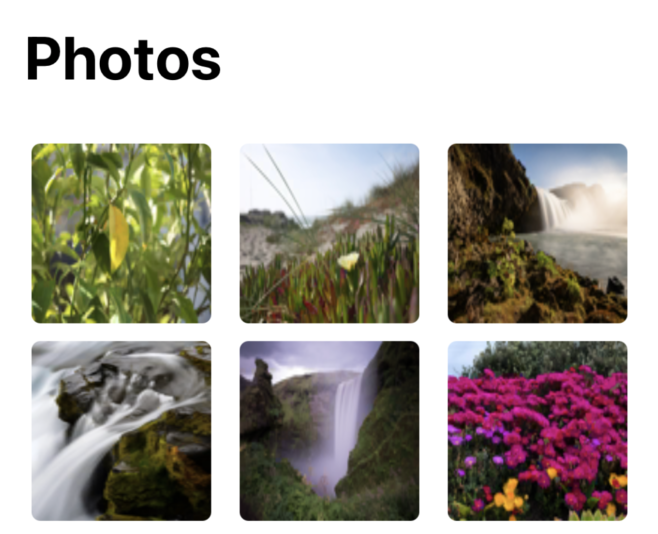
轻点其中的几个。他们会闪烁，表示它们已被添加到拼贴画中。然后，点击返回主屏幕，在那里您将看到您的新拼贴画充满荣耀：
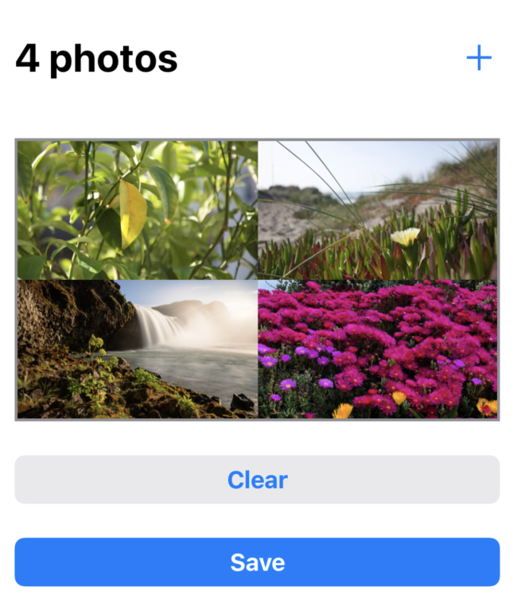
在继续前进之前，有一个松散的一端需要处理。如果您在照片选择器和主视图之间导航几次，您会注意到，在第一次之后，您无法再添加任何照片。
为什么会发生这种情况？
这个问题源于您每次展示照片选择器时如何重用selectedPhotosSubject。第一次关闭该视图时，您会发送finished的完成事件，subject已完成。
您仍然可以使用它来创建新订阅，但这些订阅一旦创建，就会完成。
要解决这个问题，请在每次展示照片选择器时创建一个新subject。滚动到add()并插入到其顶部：
selectedPhotosSubject = PassthroughSubject<UIImage, Never>()
每次您展示照片选择器时，这将创建一个新subject。您现在可以自由地在视图之间来回导航，同时仍然可以将更多照片添加到拼贴中。
将回调函数包装为Future¶
在Playground中，您可以与subject和发布者一起玩，并能够完全按照自己喜欢的方式设计一切，但在真正的应用程序中，您将与各种可可API进行交互，例如访问相机胶卷、读取设备的传感器或与某些数据库交互。
在本书的后面，您将学习如何创建自己的自定义发布者。然而，在许多情况下，只需将subject添加到现有的Cocoa类中就足以将其功能插入您的Combine工作流程中。
在本章的这一部分中，您将开发一种名为PhotoWriter的新自定义类型，该类型将允许您将用户的拼贴保存到磁盘。您将使用基于回调的照片API进行保存，并使用Combine Future允许其他类型订阅操作结果。
Note
如果您需要刷新有关Future的知识，请重新访问第2章：发布者和订阅者中的“你好，Future”部分。
打开Utility/PhotoWriter.swift，其中包含一个空的PhotoWriter类，并向其添加以下静态函数：
static func save(_ image: UIImage) -> Future<String, PhotoWriter.Error> {
Future { resolve in
}
}
此函数将尝试异步将给定映像存储在磁盘上，并返回此API订阅者将订阅的Future。
您将使用基于闭包的Future初始化器返回现成的Future，该Future将在初始化后在提供的闭包中执行代码。
让我们通过在闭包中插入以下代码来充实Future的逻辑：
do {
} catch {
resolve(.failure(.generic(error)))
}
这是一个相当不错的开始。您将执行do块内的保存，如果它抛出错误，您将以失败解决Future问题。
由于您不知道保存照片时可能抛出的确切错误，您只需将抛出的错误包装为PhotoWriter.Error.generic错误。
现在，对于函数的真正“肉”：在do主体内插入以下内容：
try PHPhotoLibrary.shared().performChangesAndWait {
// 1
let request = PHAssetChangeRequest.creationRequestForAsset(from: image)
// 2
guard let savedAssetID =
request.placeholderForCreatedAsset?.localIdentifier else {
// 3
return resolve(.failure(.couldNotSavePhoto))
}
// 4
resolve(.success(savedAssetID))
}
在这里，您可以使用PHPhotoLibrary.performChangesAndWait(_)同步访问照片库。future的闭包本身是异步执行的，所以不要担心阻止主线程。有了这个，您将在闭包内执行以下更改：
- 首先，您创建一个存储
image的请求。 - 然后，您尝试通过
request.placeholderForCreatedAsset?.localIdentifier获取新创建的资产的标识符。 - 如果创建失败并且您没有取回标识符，则使用
PhotoWriter.Error.couldNotSavePhoto错误解决Future问题。 - 最后，如果你得到了一个
savedAssetID，你就成功地解决了Future。
这就是包装回调功能所需的一切，如果您收到错误，请用失败解决，或者在收到一些结果要返回时成功解决！
现在，当用户点击保存时，您可以使用PhotoWriter.save(_:)保存当前拼贴。打开CollageNeueModel.swift，并在save()中附加：
guard let image = imagePreview else { return }
// 1
PhotoWriter.save(image)
.sink(
receiveCompletion: { [unowned self] completion in
// 2
if case .failure(let error) = completion {
lastErrorMessage = error.localizedDescription
}
clear()
},
receiveValue: { [unowned self] id in
// 3
lastSavedPhotoID = id
}
)
.store(in: &subscriptions)
在这个代码中，您：
- 使用
sink(receiveCompletion:receiveValue:)订阅PhotoWriter.save(_:) Future。 - 如果完成失败，请将错误消息保存到
lastErrorMessage。 - 如果您找回一个值——新的资产标识符——您将其存储在
lastSavedPhotoID中。
lastErrorMessage和lastSavedPhotoID已经在SwiftUI代码中接线，以向用户显示相应的消息。
再运行一次应用程序，选择几张照片，然后点击保存。这将调用您闪亮的新发布者，并在保存拼贴画后显示这样的警报：
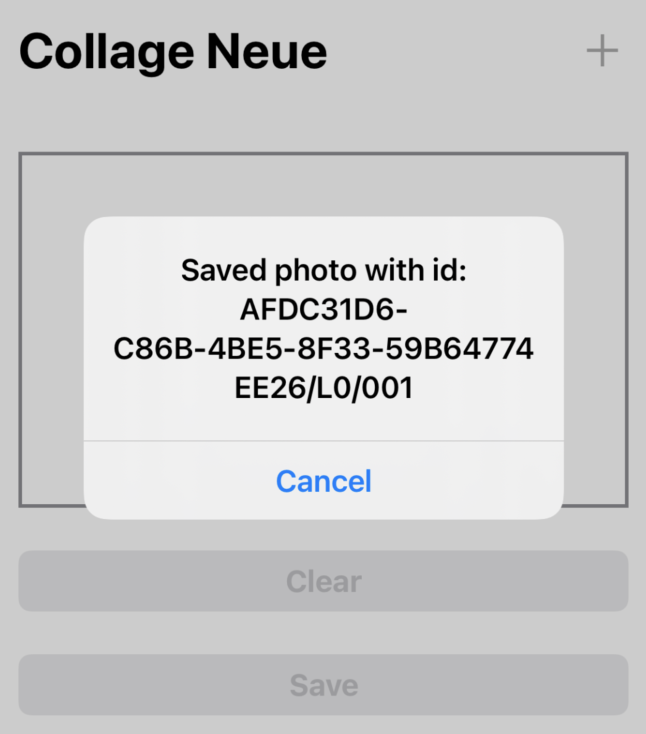
关于内存管理的说明¶
这里是一个使用Combine快速记内存管理的好地方。如前所述，Combine代码必须处理许多异步执行的工作，在处理类时，这些工作总是有点麻烦。
当您编写自己的自定义Combine代码时，您可能主要处理结构，因此您不需要在使用map、flatMap、filter等的闭包中显式指定捕获语义。
但是，当您使用UIKit/AppKit代码处理UI代码（即您有UIViewController、UICollectionController等子类）或当您使用SwiftUI视图的ObservableObject时，您需要注意所有这些类的内存管理。
在编写Combine代码时，适用标准规则，因此您应该一如既往地使用相同的Swift捕获语义：
- 如果您正在捕获可以从内存中释放的对象，例如之前显示的照片视图控制器，如果您捕获另一个对象，则应使用
[weak self]或self变量。 - 如果您捕获了一个无法释放的对象，例如该拼贴应用程序中的主视图控制器，您可以安全地使用
[unowned self]例如，您从未从导航堆栈中弹出，因此始终存在。
共享订阅¶
回顾CollageNeueModel.add()中的代码，您可以对用户在PhotosView中选择的图像做更多事情。
这提出了一个令人不安的问题：您应该多次订阅相同的selectedPhotos发布者，还是做其他事情？
事实证明，订阅同一发布者可能会产生不必要的副作用。如果你想一想，你不知道发布者在订阅时在做什么，是吗？它可能是在创建新资源、提出网络请求或其他意外工作。
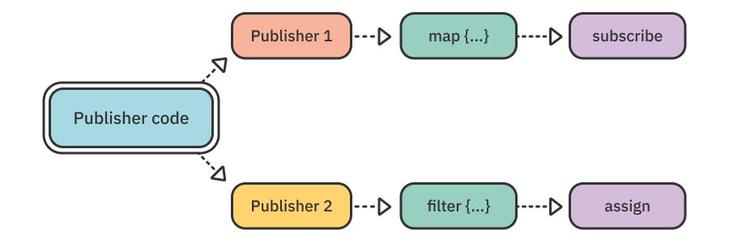
为同一发布者创建多个订阅时，正确的方法是使用share()操作符共享原始发布者。这将发布者包装在一个类中，因此它可以安全地发送给多个订阅者，而无需再次执行其基础工作。
仍在CollageNeueModel.swift中，找到let newPhotos = selectedPhotosSubject行，并将其替换为：
let newPhotos = selectedPhotosSubject.share()
现在，可以安全地创建多个newPhotos订阅，而不必担心发布者会为每个新订阅者多次执行副作用：
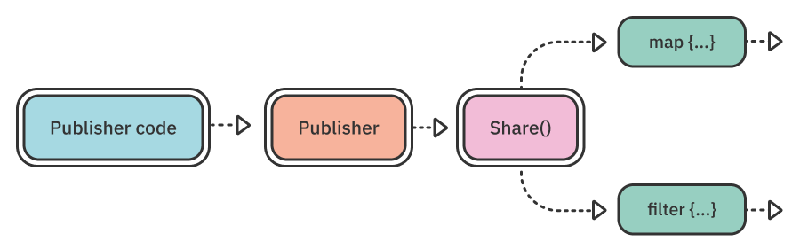
需要记住的注意事项是，share()不会从共享订阅中重新发射任何值，因此您只能获得订阅后出现的值。
例如，如果您在share()发布者上有两个订阅，并且源发布者在订阅时同步发送，则只有第一个订阅者将获得该值，因为第二个订阅者在实际发送该值时没有订阅。如果源发布者异步发射，这不太常见。
解决这个问题的可靠解决方案是构建自己的共享操作符，该操作符在新订阅者订阅时重新发出或重播过去的值。建立自己的操作符一点也不复杂——事实上，您将在第18章“自定义发布者和处理背压”中构建一个名为shareReplay()的操作符，这将允许您以上述方式使用共享。
实践中的操作符¶
现在您已经了解了一些有用的被动模式，是时候练习您在前几章中介绍的一些操作符，并看到它们的实际应用了。
打开CollageNeueModel.swift，并将您共享selectedPhotos订阅的行替换为：let newPhotos = selectedPhotosSubject.share()：
let newPhotos = selectedPhotosSubject
.prefix(while: { [unowned self] _ in
self.images.value.count < 6
})
.share()
您已经了解了 prefix(while:) 作为强大的组合过滤操作符之一，在这里您可以在实践中使用它。 只要选择的图像总数少于六张，上面的代码就会保持对 selectedPhotos 的订阅。 这将有效地允许用户为他们的拼贴选择多达六张照片。
在调用share()之前添加prefix(while:)允许您不仅在一个订阅上，而且在所有订阅newPhotos的订阅上过滤传入值。
运行该应用程序，并尝试添加六张以上的照片。您将看到，在前六个之后，主视图控制器不接受更多。
同样，您可以通过组合您已经知道和喜欢的所有操作符来实现您需要的任何逻辑，如filter、dropFirst、map等。
这是本章的总结！你做得很好，值得好好拍拍肩膀！
挑战¶
恭喜您完成了本教程风格的章节！如果您想在下一章进入更多理论之前再完成一个可选任务，请继续阅读以下内容。
打开Utility/PHPhotoLibrary+Combine.swift，并阅读从用户那里获得Collage Neue应用程序的照片库授权的代码。您肯定会注意到，逻辑非常简单，并且基于“标准”回调API。
这为您提供了将Cocoa API包装为Future的绝佳机会。对于此挑战，请在PHPhotoLibrary中添加一个新的静态属性，名为 isAuthorized，该属性为类型为Future<Bool, Never>，并允许其他类型订阅照片库授权状态。
您在本章中已经这样做了几次，现有的fetchAuthorizationStatus(callback:)函数应该非常简单。祝你好运！如果您在此过程中遇到任何困难，请不要忘记，您可以始终进入本章提供的挑战文件夹，并查看示例解决方案。
最后，别忘了在PhotosView中使用新的isAuthorized发布者！
对于奖励积分，如果用户不授予对其照片的访问权限，请显示错误消息，并在点击关闭时导航回主视图控制器。
要播放不同的授权状态并测试您的代码，请在模拟器或设备上打开设置应用程序，然后导航到Privacy/Photos。
将拼贴的授权状态更改为None或All Photos，以测试您的代码在以下状态下的行为方式：
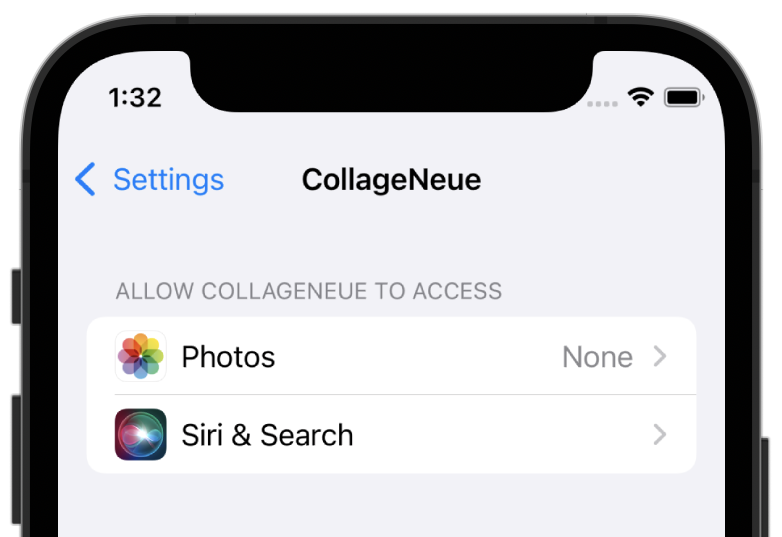
如果你到目前为止独自成功应对挑战，你真的应该得到一轮额外的掌声！无论哪种方式，本章的挑战文件夹中都提供了您可以随时咨询的一个可能的解决方案。
关键点¶
- 在日常任务中，您很可能必须处理回调或基于委托的
API。幸运的是，通过使用subject，这些很容易被包装为期货或发布者。 - 从委托和回调等各种模式转向单个发布者/订阅者模式，使呈现视图和获取值等平凡任务变得轻而易举。
- 为了避免多次订阅发布者时出现不必要的副作用，请通过
share()操作符使用共享发布者。
从这里去哪里？¶
这是第二节的总结：“操作符”从下一章开始，您将开始更多地研究结合与现有基金会和UIKit/AppKit API集成的方式。